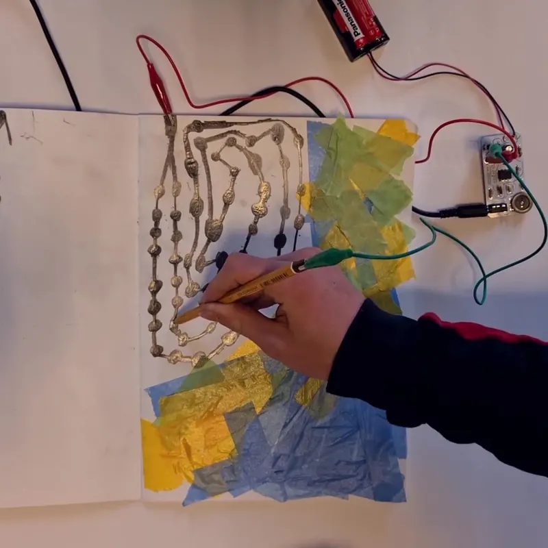
SoundSketch: teken je eigen geluid
Teken met een potlood en hoor je tekening. Grafiet geleidt, en hoe langer je lijn, hoe lager de toon.
Voor onderwijs, musea en cultuurhuizen
Techniek waar je met je handen aan zit. We nemen onze machines mee en laten deelnemers zelf iets maken dat werkt, klinkt en van henzelf is. Vakoverstijgend, hands-on en zonder saaie handleiding.

Teken met een potlood en hoor je tekening. Grafiet geleidt, en hoe langer je lijn, hoe lager de toon.
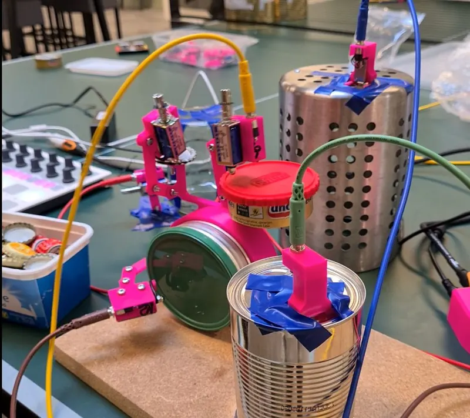
Bouw je eigen muziekmachine met sequencers en tikkende elektronica, en maak een geluidskunstwerk dat er ook goed uitziet.
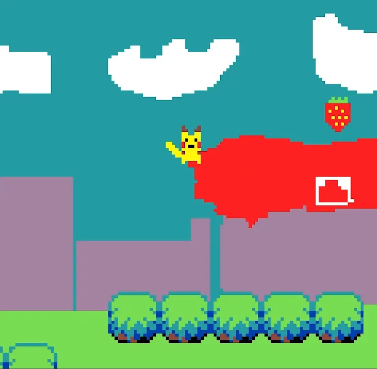
Ontwerp en bouw je eigen videogame, speel 'm op een echte arcadekast en deel 'm online met je vrienden.
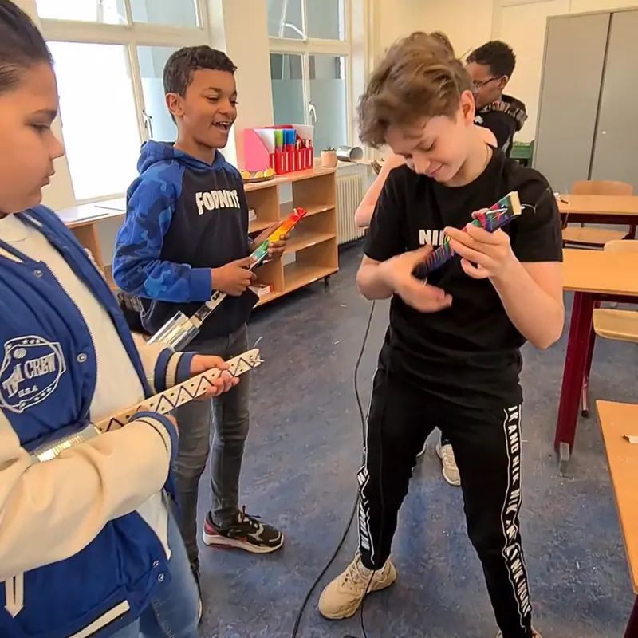
Bouw van gerecyclede materialen je eigen elektrische gitaar, en ontdek de techniek achter geluid.
Onze workshops komen voort uit het werk dat we maken. Dit bouwden we met of voor jongeren, en dit gebeurde er toen anderen ermee aan de slag gingen.
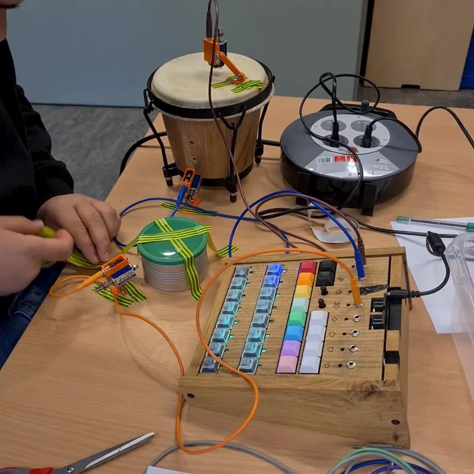
Poortjes door, een pieper op zak en geen mobiel. Drie dagen workshop geven in de jeugdgevangenis in Breda.
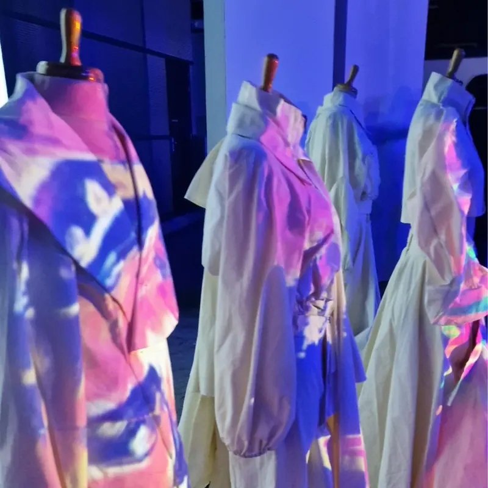
Een dag tussen het eindexamenwerk van Summa-studenten. De werken waren fantastisch, de verhalen erachter nog beter.
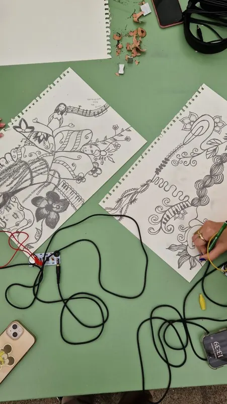
Leerlingen maakten met de SideQuest Rave hun eigen soundtrack bij een zelfgemaakte film.
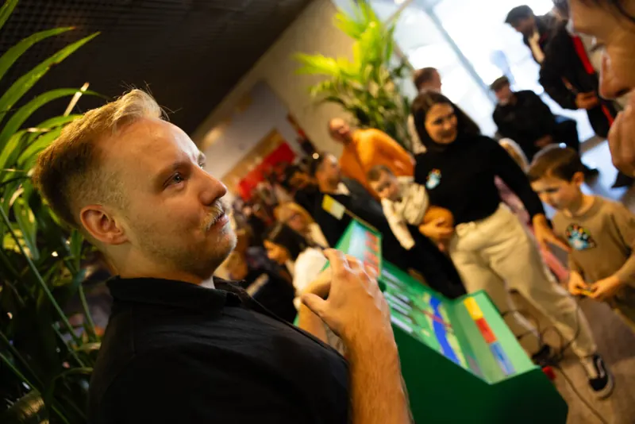
Weer aanwezig bij de MAKERDAYS Eindhoven met de SideQuest Rave en de arcademachine, inmiddels bijna traditie.
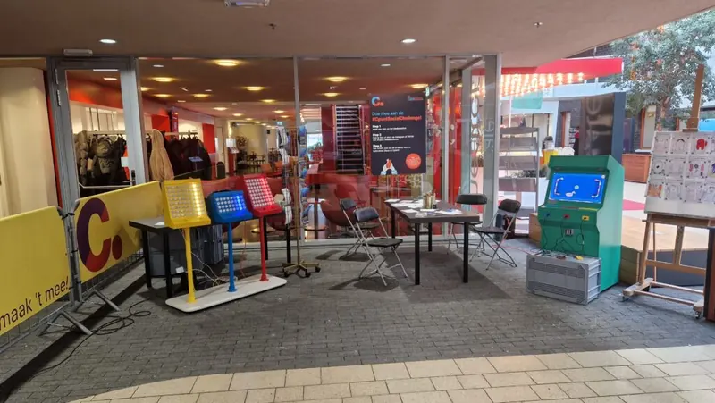
We werden ingezet als rustmoment, maar werden het drukste plekje van het mediafestival.
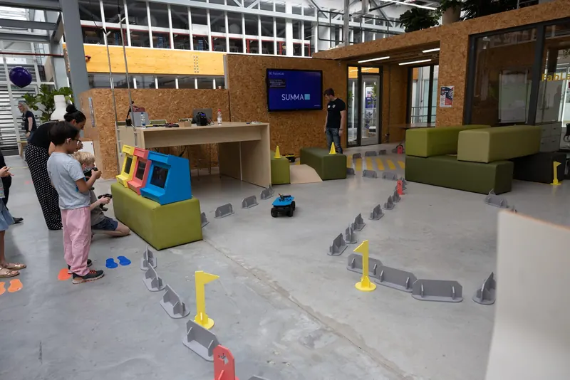
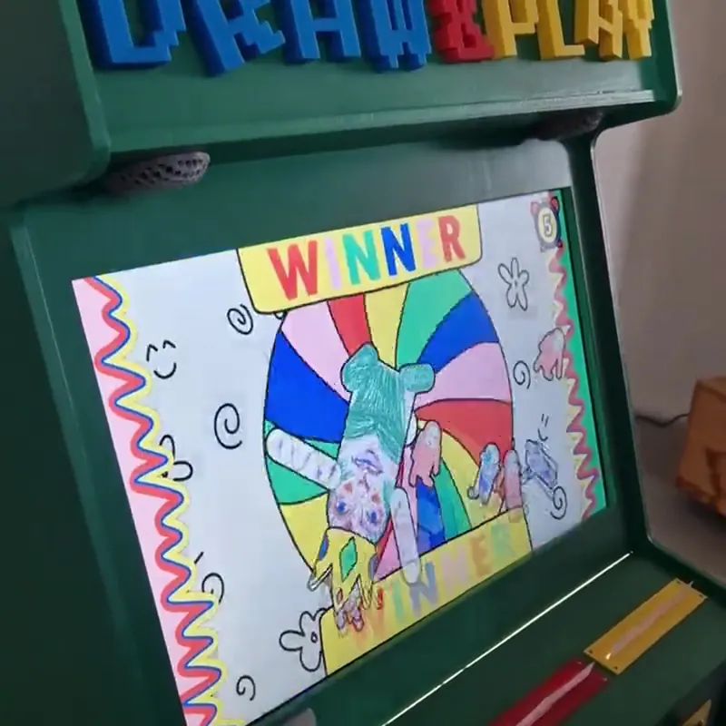
Vier dagen op het Makers Festival Twente met de arcadekast en de Side Quest Rave. Van giechelende kids tot ouders die weer kind durfden te zijn.
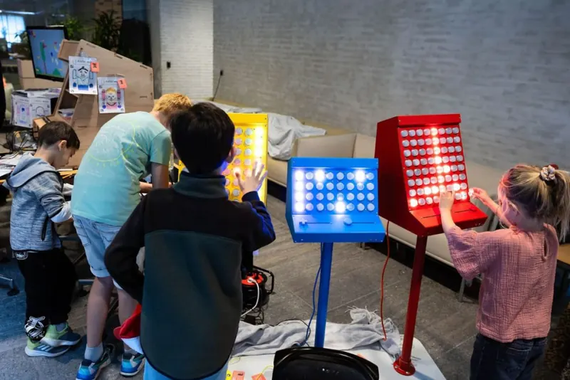
Twee dagen in het teken van de makers, met de Side Quest Rave en de arcade-kast op de fair.
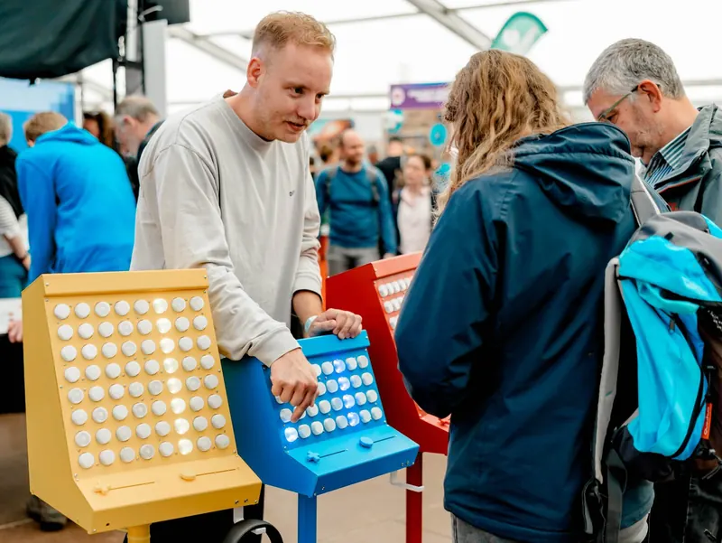
Met de SideQuest Rave op het Nerdland Festival: samen muziek maken, ongeacht je muzikale achtergrond.
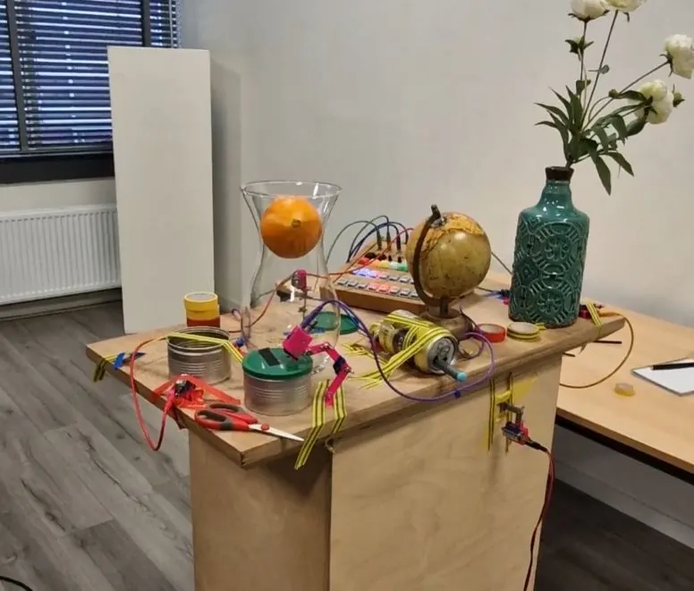
De uitdaging die ik gaf aan studenten van de KU Leuven, en de drumrobot die eruit voortkwam.
Get in touch
Vertel ons over je groep en je plek, dan denken we mee. Kosten hangen af van tijd, locatie en aantal deelnemers.